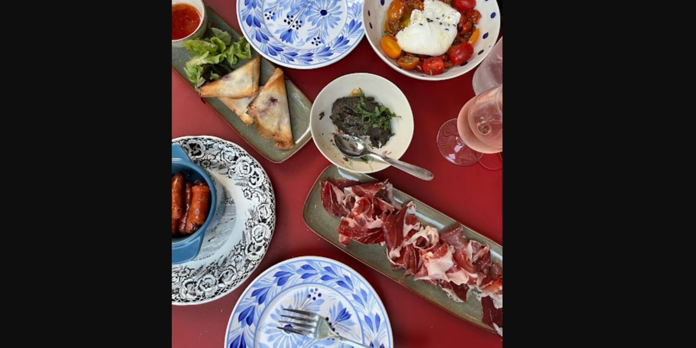
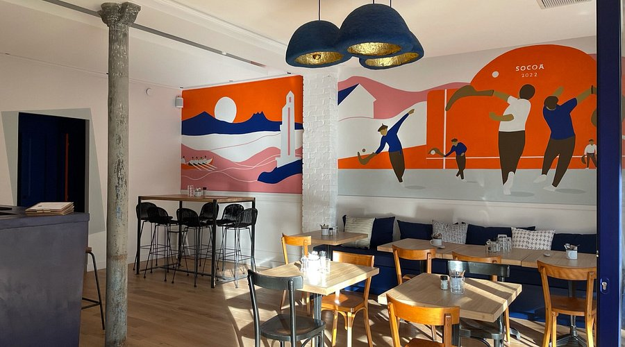
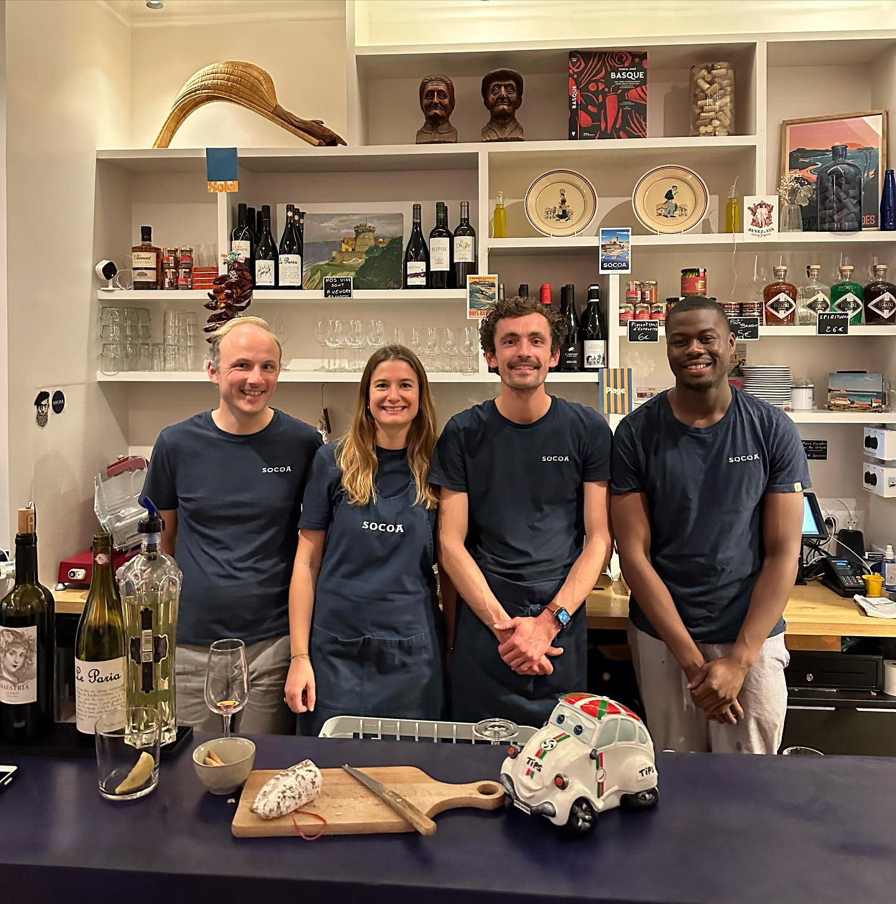
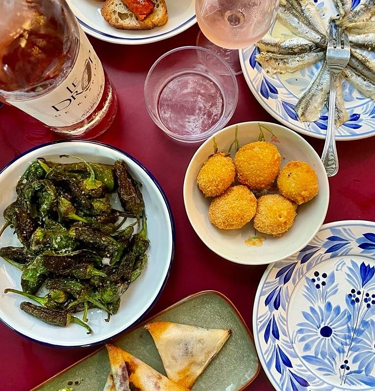

Croquetas de chorizo
Panure dorée, cœur fondant, chorizo confit maison. L'incontournable du comptoir — celle qu'on reprend toujours, sans même y penser.

Bar à tapas · Basque & Espagnol
Saveurs du Pays Basque et d'Espagne,
au cœur du 13e
112 Avenue d'Ivry · Paris
Notre histoire
SOCOA est né du rêve de Thomas, enfant du Pays Basque parti vivre vingt ans à Barcelone. Ancien étudiant en école de commerce reconverti à la cuisine, CAP et formation mixologie en poche, il a voulu rapporter à Paris ce qu'il aime le plus : la convivialité des comptoirs du Sud.
Son frère Clément, architecte, a imaginé le décor — bois chaleureux, tons profonds, et une grande fresque murale signée Iris Fossier qui raconte une scène de pelote basque. Chaque détail est une invitation au partage.
Ici, la carte change au rythme des saisons. On y croise la mer et la montagne, le chorizo et le piment, l'accent espagnol et l'âme basque — une cuisine généreuse et sincère à partager entre amis, devant un verre de vin bio ou un cocktail maison.

Nos spécialités
Des tapas qui circulent, des planches qui s'attardent. SOCOA, c'est une cuisine de partage où chaque bouchée raconte une région du Sud.

Panure dorée, cœur fondant, chorizo confit maison. L'incontournable du comptoir — celle qu'on reprend toujours, sans même y penser.

Poêlés à l'huile d'olive, fleur de sel. Les petits piments verts galiciens qui font mentir le dicton — jusqu'au dernier de l'assiette.

Une sélection courte et vivante — vins bio côté Sud, cocktails créés par Thomas pour prolonger la soirée jusqu'au dernier verre.
La carte
Carte évolutive — prix indicatifs. Produits frais travaillés selon l'arrivage, l'humeur du marché et les envies de Thomas.
Horaires & accès
À deux pas de Tolbiac, à l'angle d'Ivry. La salle ouvre dès 18h30 — et le samedi midi pour prolonger le week-end.
| Lundi | Fermé |
| Mardi | 18:30 – 00:00 |
| Mercredi | 18:30 – 00:00 |
| Jeudi | 18:30 – 00:00 |
| Vendredi | 18:30 – 00:00 |
| Samedi | 12:00 – 15:00 · 18:30 – 00:00 |
| Dimanche | Fermé |
112 Avenue d'Ivry
75013 Paris
Salle privatisable pour vos événements — nous contacter.
Ce qu'on en dit
« Un petit coin de Pays Basque dans Paris. Les croquetas sont une tuerie, le service chaleureux, l'ambiance exactement ce qu'on cherche un vendredi soir. »
— Camille L.« Adresse coup de cœur du 13e. La carte change au fil des saisons, on revient à chaque fois. Thomas connaît ses vins et sait parfaitement conseiller. »
— Antoine M.« Le décor est magnifique, la fresque est un vrai plus. On a partagé la planche mer & montagne — sincèrement, on reviendra très vite. »
— Sarah D.Réservation directe par téléphone — et pour vos événements privés, la salle se privatise sur demande.
06 27 48 63 54